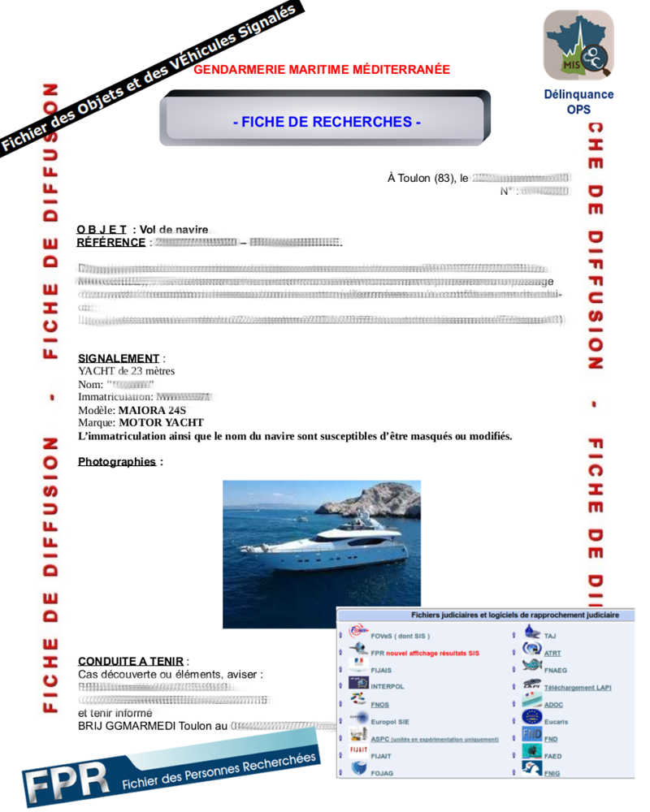

Brigade de renseignements et d'investigations judiciaires

Missions :
Elle est en charge : - De l'établissement et à la diffusion de l'information judiciaire. - Du rapprochement judiciaire et à la détection des phénomènes. - Du suivi statistique de l'activité judiciaire des unités. - Elle veille à la remontée systématique d’informations en provenance des unités, contrôle et améliore la qualité des messages reçus et alimente les bases de données, qu'elles soient de nature judiciaire ou statistique. - Elle échange régulièrement toutes informations utiles avec les différentes unités du groupement et la SR maritime. - Elle procède aux rapprochements judiciaires en liaison étroite avec le service central de renseignement criminel (SCRC) qu’elle interroge, si nécessaire, au profit des unités du groupement.
Moyens :
- Multimédia : - Appareils photo, logiciels, ordinateurs...
Effectifs :
- 2 personnels : 2 Sous-officiers.